北海道 · 札幌市
洋菓子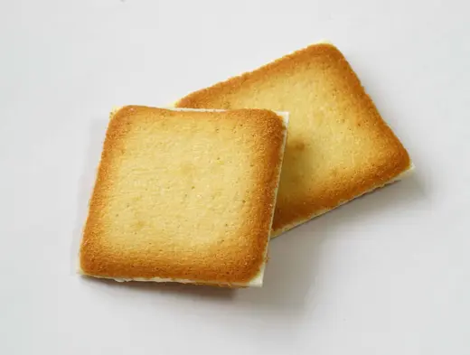

白い恋人
白い恋人パーク
掲載元を見る ↗47都道府県の名物スイーツと、その味に出会えるお店。
地域やキーワードを選んで検索してください
北海道 · 札幌市
洋菓子
白い恋人パーク
掲載元を見る ↗北海道 · 帯広市
洋菓子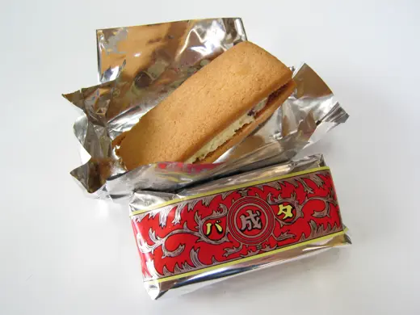
六花亭
掲載元を見る ↗北海道 · 音更町
和菓子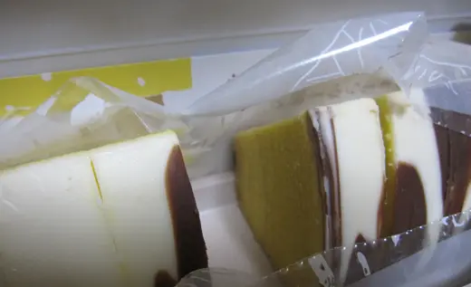
柳月
掲載元を見る ↗北海道 · 小樽市
洋菓子ルタオ
掲載元を見る ↗北海道 · 札幌市
和菓子ほんま
掲載元を見る ↗北海道 · 札幌市
洋菓子千秋庵
掲載元を見る ↗北海道 · 江差町
和菓子五勝手屋本舗
掲載元を見る ↗北海道 · 札幌市
和菓子三八 菓か舎
掲載元を見る ↗北海道 · 洞爺湖町
和菓子わかさいも本舗
掲載元を見る ↗北海道 · 苫小牧市
和菓子三星
掲載元を見る ↗青森県 · 弘前市
洋菓子ラグノオささき
掲載元を見る ↗青森県 · 八戸市
和菓子アルパジョン
掲載元を見る ↗青森県 · 青森市
和菓子おきな屋
掲載元を見る ↗青森県 · 青森市
和菓子上ボシ武内製飴所
掲載元を見る ↗青森県 · 青森市
和菓子永井久慈良餅店
掲載元を見る ↗青森県 · 八戸市
洋菓子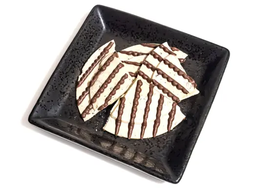
しんぼり
掲載元を見る ↗青森県 · 弘前市
和菓子大阪屋
掲載元を見る ↗青森県 · 青森市
和菓子甘精堂本店
掲載元を見る ↗青森県 · 八戸市
和菓子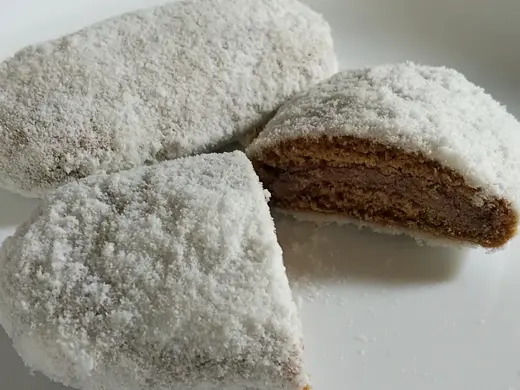
萬榮堂
掲載元を見る ↗岩手県 · 大船渡市
和菓子さいとう製菓
掲載元を見る ↗岩手県 · 一関市
和菓子松栄堂
掲載元を見る ↗岩手県 · 二戸市
和菓子南部せんべい乃巖手屋
掲載元を見る ↗岩手県 · 奥州市
洋菓子フルールきくや
掲載元を見る ↗岩手県 · 奥州市
和菓子回進堂
掲載元を見る ↗岩手県 · 北上市
洋菓子トロイカ
掲載元を見る ↗岩手県 · 宮古市
和菓子すが田
掲載元を見る ↗岩手県 · 盛岡市
洋菓子タルトタタン
掲載元を見る ↗岩手県 · 盛岡市
洋菓子花月堂
掲載元を見る ↗宮城県 · 仙台市
洋菓子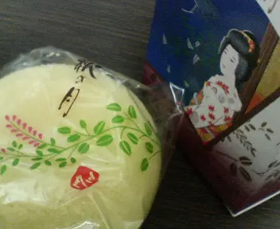
菓匠三全
掲載元を見る ↗宮城県 · 仙台市
和菓子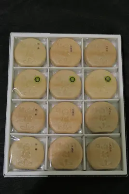
白松がモナカ本舗
掲載元を見る ↗宮城県 · 仙台市
和菓子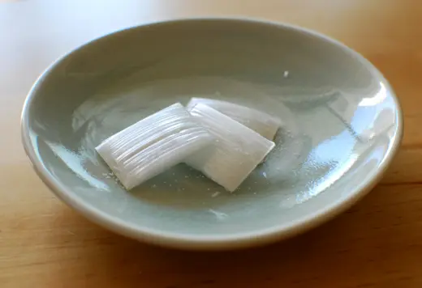
九重本舗玉澤
掲載元を見る ↗宮城県 · 仙台市
和菓子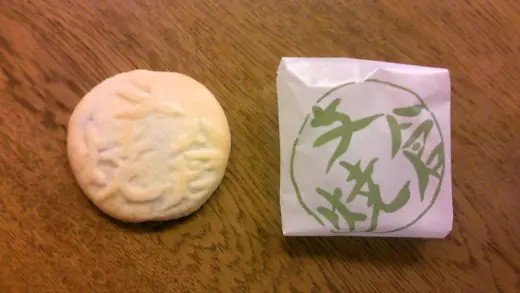
ふじや千舟
掲載元を見る ↗宮城県 · 名取市
和菓子甘仙堂
掲載元を見る ↗宮城県 · 仙台市
和菓子石橋屋
掲載元を見る ↗宮城県 · 塩竈市
和菓子榮太楼
掲載元を見る ↗宮城県 · 仙台市
和菓子売茶翁
掲載元を見る ↗宮城県 · 仙台市
和菓子ankoya
掲載元を見る ↗宮城県 · 塩竈市
和菓子丹六園
掲載元を見る ↗秋田県 · 秋田市
和菓子金萬
掲載元を見る ↗秋田県 · 秋田市
和菓子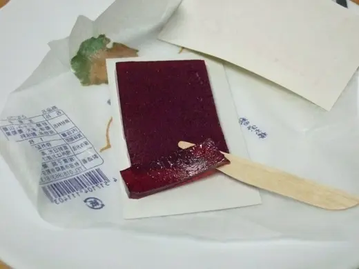
菓子舗榮太楼
掲載元を見る ↗秋田県 · 仙北市
和菓子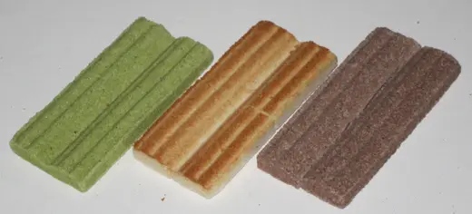
唐土庵
掲載元を見る ↗秋田県 · にかほ市
和菓子渥美菓子店
掲載元を見る ↗秋田県 · 秋田市
和菓子たけや製パン
掲載元を見る ↗秋田県 · 秋田市
和菓子かおる堂
掲載元を見る ↗秋田県 · 横手市
洋菓子木村屋
掲載元を見る ↗秋田県 · 北秋田市
和菓子晩梅
掲載元を見る ↗秋田県 · 湯沢市
和菓子高市青果店
掲載元を見る ↗秋田県 · 能代市
和菓子セキト
掲載元を見る ↗山形県 · 山形市
和菓子乃し梅本舗 佐藤屋
掲載元を見る ↗山形県 · 鶴岡市
和菓子宇佐美煎餅店
掲載元を見る ↗山形県 · 高畠町
洋菓子日本製乳
掲載元を見る ↗山形県 · 南陽市
和菓子じんだん本舗 大江
掲載元を見る ↗山形県 · 鶴岡市
和菓子つるおか木村屋
掲載元を見る ↗山形県 · 山形市
和菓子山田家
掲載元を見る ↗山形県 · 尾花沢市
和菓子明友
掲載元を見る ↗山形県 · 上山市
和菓子だんご本舗たかはし
掲載元を見る ↗山形県 · 鶴岡市
和菓子清川屋
掲載元を見る ↗山形県 · 天童市
和菓子腰掛庵
掲載元を見る ↗福島県 · 郡山市
和菓子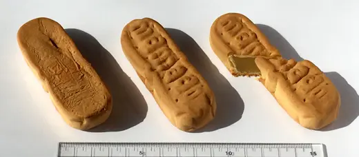
三万石
掲載元を見る ↗福島県 · 郡山市
和菓子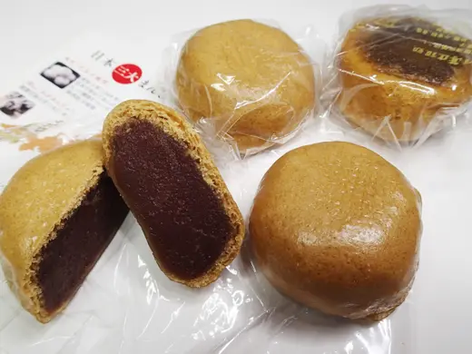
柏屋
掲載元を見る ↗福島県 · 郡山市
和菓子かんのや
掲載元を見る ↗福島県 · いわき市
和菓子お菓子のみよし
掲載元を見る ↗福島県 · 会津坂下町
和菓子太郎庵
掲載元を見る ↗福島県 · 南相馬市
和菓子木乃幡
掲載元を見る ↗福島県 · 二本松市
和菓子玉嶋屋
掲載元を見る ↗福島県 · 柳津町
和菓子小池菓子舗
掲載元を見る ↗茨城県 · 水戸市
和菓子亀じるし
掲載元を見る ↗茨城県 · ひたちなか市
和菓子大丸屋
掲載元を見る ↗茨城県 · 鉾田市
和菓子ファームクーヘン フカサク
掲載元を見る ↗茨城県 · 鹿嶋市
和菓子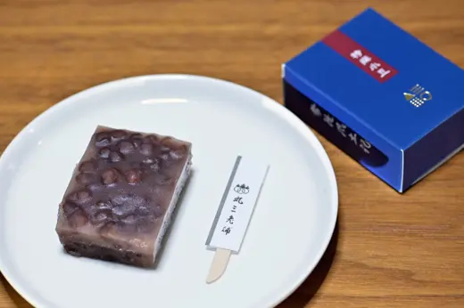
丸三老舗
掲載元を見る ↗茨城県 · 水戸市
和菓子あさ川製菓
掲載元を見る ↗茨城県 · 笠間市
和菓子道の駅かさま 楽栗
掲載元を見る ↗茨城県 · つくば市
洋菓子ガトープーリア
掲載元を見る ↗茨城県 · つくば市
和菓子コート・ダジュール
掲載元を見る ↗茨城県 · 筑西市
和菓子湖月庵
掲載元を見る ↗栃木県 · 足利市
和菓子香雲堂本店
掲載元を見る ↗栃木県 · 日光市
洋菓子チーズガーデン THE NIKKO
掲載元を見る ↗栃木県 · 那須町
和菓子お菓子の城 那須ハートランド
掲載元を見る ↗栃木県 · 宇都宮市
和菓子高林堂
掲載元を見る ↗栃木県 · 日光市
和菓子綿半
掲載元を見る ↗栃木県 · 足利市
和菓子大麦工房ロア
掲載元を見る ↗栃木県 · 宇都宮市
和菓子雅洞
掲載元を見る ↗栃木県 · 日光市
和菓子湯沢屋
掲載元を見る ↗栃木県 · 日光市
洋菓子日昇堂
掲載元を見る ↗群馬県 · 高崎市
洋菓子ガトーフェスタ ハラダ
掲載元を見る ↗群馬県 · 前橋市
和菓子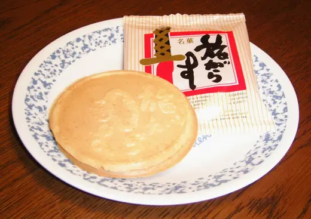
旅がらす本舗清月堂
掲載元を見る ↗群馬県 · 渋川市
和菓子勝月堂
掲載元を見る ↗群馬県 · みなかみ町
和菓子小荒井製菓
掲載元を見る ↗群馬県 · 藤岡市
和菓子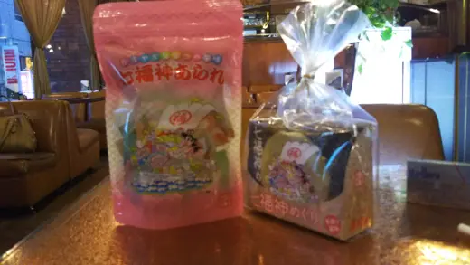
幸煎餅
掲載元を見る ↗群馬県 · みどり市
和菓子小松屋
掲載元を見る ↗群馬県 · 館林市
和菓子三桝屋總本店
掲載元を見る ↗群馬県 · 前橋市
洋菓子みよし乃製菓舗
掲載元を見る ↗群馬県 · 高崎市
和菓子丁子堂房右衛門
掲載元を見る ↗群馬県 · 桐生市
和菓子舟定
掲載元を見る ↗埼玉県 · 行田市
和菓子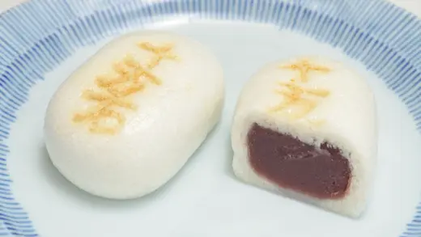
十万石ふくさや
掲載元を見る ↗埼玉県 · 草加市
和菓子山香煎餅本舗
掲載元を見る ↗埼玉県 · さいたま市
和菓子彩果の宝石
掲載元を見る ↗埼玉県 · 川越市
和菓子菓匠右門
掲載元を見る ↗埼玉県 · 熊谷市
和菓子紅葉屋本店
掲載元を見る ↗埼玉県 · さいたま市
和菓子菓匠花見
掲載元を見る ↗埼玉県 · 川越市
和菓子くらづくり本舗
掲載元を見る ↗埼玉県 · 熊谷市
和菓子梅林堂
掲載元を見る ↗埼玉県 · 秩父市
和菓子水戸屋
掲載元を見る ↗埼玉県 · 川越市
和菓子龜屋
掲載元を見る ↗千葉県 · 成田市
和菓子なごみの米屋
掲載元を見る ↗千葉県 · 鴨川市
和菓子亀屋本店
掲載元を見る ↗千葉県 · 船橋市
和菓子ピーターパン
掲載元を見る ↗千葉県 · 館山市
洋菓子房洋堂
掲載元を見る ↗千葉県 · 佐倉市
和菓子蔵六餅本舗木村屋
掲載元を見る ↗千葉県 · 銚子市
和菓子銚子電鉄
掲載元を見る ↗千葉県 · 館山市
洋菓子ピネキ
掲載元を見る ↗千葉県 · 香取市
和菓子いなえ
掲載元を見る ↗東京都 · 台東区
和菓子舟和
掲載元を見る ↗東京都 · 中央区
和菓子重盛永信堂
掲載元を見る ↗東京都 · 台東区
和菓子常盤堂雷おこし本舗
掲載元を見る ↗東京都 · 文京区
和菓子群林堂
掲載元を見る ↗東京都 · 中央区
和菓子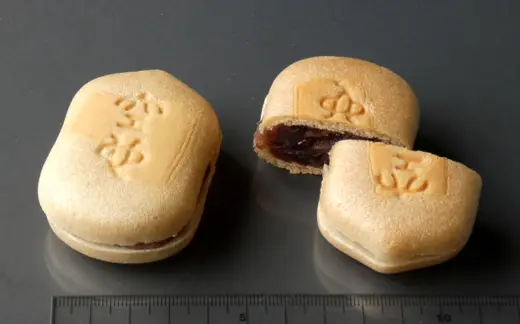
空也
掲載元を見る ↗東京都 · 台東区
和菓子うさぎや
掲載元を見る ↗東京都 · 千代田区
和菓子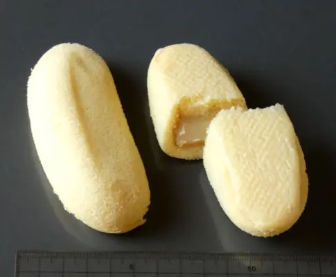
東京ばな奈
掲載元を見る ↗東京都 · 新宿区
洋菓子バターバトラー
掲載元を見る ↗東京都 · 千代田区
洋菓子ヨックモック
掲載元を見る ↗東京都 · 港区
和菓子とらや
掲載元を見る ↗神奈川県 · 鎌倉市
洋菓子豊島屋
掲載元を見る ↗神奈川県 · 横浜市
和菓子ありあけ ハーバーズムーン
掲載元を見る ↗神奈川県 · 横浜市
和菓子霧笛楼
掲載元を見る ↗神奈川県 · 平塚市
洋菓子湘南クリエイティブガトー 葦
掲載元を見る ↗神奈川県 · 箱根町
和菓子湯もち本舗ちもと
掲載元を見る ↗神奈川県 · 小田原市
和菓子ういろう
掲載元を見る ↗神奈川県 · 箱根町
洋菓子グランリヴィエール箱根
掲載元を見る ↗神奈川県 · 鎌倉市
洋菓子マーロウ鎌倉駅前店
掲載元を見る ↗新潟県 · 新潟市
和菓子田中屋本店
掲載元を見る ↗新潟県 · 新潟市
和菓子大阪屋
掲載元を見る ↗新潟県 · 上越市
和菓子かなざわ総本舗
掲載元を見る ↗新潟県 · 新潟市
和菓子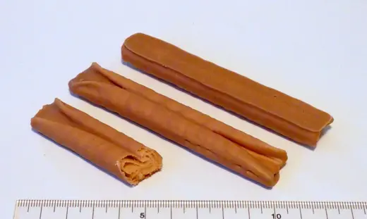
Un BOURBON
掲載元を見る ↗新潟県 · 長岡市
和菓子浪花屋製菓
掲載元を見る ↗新潟県 · 長岡市
和菓子長命堂飴舗
掲載元を見る ↗新潟県 · 長岡市
和菓子越乃雪本舗 大和屋
掲載元を見る ↗新潟県 · 新潟市
和菓子百花園
掲載元を見る ↗富山県 · 富山市
和菓子月世界本舗
掲載元を見る ↗富山県 · 富山市
和菓子リブラン
掲載元を見る ↗富山県 · 南砺市
和菓子日の出屋製菓産業
掲載元を見る ↗富山県 · 高岡市
和菓子とこなつ本舗 大野屋
掲載元を見る ↗富山県 · 富山市
和菓子林盛堂本店
掲載元を見る ↗富山県 · 高岡市
和菓子こし村百味堂
掲載元を見る ↗富山県 · 富山市
和菓子美都家
掲載元を見る ↗富山県 · 富山市
和菓子不破福寿堂
掲載元を見る ↗石川県 · 金沢市
和菓子柴舟小出
掲載元を見る ↗石川県 · 金沢市
和菓子中田屋
掲載元を見る ↗石川県 · 白山市
和菓子圓八
掲載元を見る ↗石川県 · 金沢市
和菓子森八
掲載元を見る ↗石川県 · 金沢市
和菓子菓匠髙木屋
掲載元を見る ↗石川県 · 金沢市
和菓子茶菓工房たろう
掲載元を見る ↗石川県 · 小松市
和菓子松葉屋
掲載元を見る ↗石川県 · 金沢市
和菓子金沢うら田
掲載元を見る ↗福井県 · 福井市
和菓子羽二重餅総本舗 松岡軒
掲載元を見る ↗福井県 · 福井市
和菓子えがわ
掲載元を見る ↗福井県 · 勝山市
和菓子金花堂はや川
掲載元を見る ↗福井県 · 大野市
和菓子亀寿堂
掲載元を見る ↗福井県 · 福井市
和菓子久保田製菓
掲載元を見る ↗福井県 · 福井市
洋菓子西洋菓子倶楽部
掲載元を見る ↗福井県 · 小浜市
和菓子伊勢屋
掲載元を見る ↗福井県 · 小浜市
和菓子井上耕養庵
掲載元を見る ↗福井県 · 坂井市
和菓子五月ヶ瀬
掲載元を見る ↗山梨県 · 甲府市
和菓子桔梗屋 甲府本館
掲載元を見る ↗山梨県 · 北杜市
和菓子金精軒
掲載元を見る ↗山梨県 · 南アルプス市
洋菓子清月
掲載元を見る ↗山梨県 · 甲府市
和菓子澤田屋
掲載元を見る ↗山梨県 · 甲府市
洋菓子竹屋あさかわ
掲載元を見る ↗山梨県 · 甲府市
洋菓子葡萄屋kofu レーズンサンド専門店
掲載元を見る ↗山梨県 · 富士河口湖町
洋菓子フジヤマクッキー
掲載元を見る ↗山梨県 · 中央市
和菓子菓子処 竹林堂
掲載元を見る ↗長野県 · 小布施町
和菓子小布施堂
掲載元を見る ↗長野県 · 上田市
和菓子飯島商店
掲載元を見る ↗長野県 · 上田市
和菓子信濃路うさぎや
掲載元を見る ↗長野県 · 大町市
和菓子田中屋
掲載元を見る ↗長野県 · 松本市
和菓子開運堂
掲載元を見る ↗長野県 · 小布施町
和菓子桜井甘精堂
掲載元を見る ↗長野県 · 飯田市
和菓子いと忠
掲載元を見る ↗長野県 · 小布施町
和菓子竹風堂
掲載元を見る ↗長野県 · 高森町
和菓子マツザワ
掲載元を見る ↗岐阜県 · 中津川市
和菓子すや
掲載元を見る ↗岐阜県 · 大垣市
和菓子金蝶園総本家
掲載元を見る ↗岐阜県 · 岐阜市
和菓子玉井屋本舗
掲載元を見る ↗岐阜県 · 飛騨市
和菓子井之廣製菓舗
掲載元を見る ↗岐阜県 · 北方町
和菓子菓匠とよだや
掲載元を見る ↗岐阜県 · 恵那市
和菓子恵那川上屋
掲載元を見る ↗岐阜県 · 大垣市
和菓子田中屋せんべい総本家
掲載元を見る ↗岐阜県 · 大垣市
和菓子御菓子つちや
掲載元を見る ↗静岡県 · 浜松市
洋菓子春華堂
掲載元を見る ↗静岡県 · 静岡市
洋菓子治一郎 静岡パルコ店
掲載元を見る ↗静岡県 · 沼津市
和菓子バンデロール
掲載元を見る ↗静岡県 · 磐田市
和菓子又一庵
掲載元を見る ↗静岡県 · 熱海市
和菓子菓子舗 間瀬
掲載元を見る ↗静岡県 · 静岡市
和菓子やまだいち
掲載元を見る ↗静岡県 · 熱海市
洋菓子熱海プリン
掲載元を見る ↗静岡県 · 熱海市
和菓子常盤木羊羹店
掲載元を見る ↗静岡県 · 伊豆市
和菓子修善寺プリン工房
掲載元を見る ↗静岡県 · 掛川市
和菓子桂花園
掲載元を見る ↗愛知県 · 名古屋市
和菓子青柳総本家
掲載元を見る ↗愛知県 · 名古屋市
和菓子大須ういろ
掲載元を見る ↗愛知県 · 東海市
和菓子坂角総本舖
掲載元を見る ↗愛知県 · 名古屋市
和菓子敷島製パン
掲載元を見る ↗愛知県 · 小牧市
洋菓子松永製菓
掲載元を見る ↗愛知県 · 名古屋市
和菓子梅花堂
掲載元を見る ↗愛知県 · 名古屋市
洋菓子菓宗庵
掲載元を見る ↗愛知県 · 名古屋市
和菓子ぴよりんshop
掲載元を見る ↗愛知県 · 名古屋市
和菓子両口屋是清
掲載元を見る ↗愛知県 · 岡崎市
和菓子備前屋
掲載元を見る ↗三重県 · 伊勢市
和菓子赤福
掲載元を見る ↗三重県 · 伊勢市
和菓子へんばや商店
掲載元を見る ↗三重県 · 伊勢市
和菓子岩戸屋
掲載元を見る ↗三重県 · 四日市市
和菓子なが餅笹井屋
掲載元を見る ↗三重県 · 四日市市
和菓子太白永餅 金城軒
掲載元を見る ↗三重県 · 亀山市
和菓子深川屋
掲載元を見る ↗三重県 · 津市
和菓子平治煎餅本店
掲載元を見る ↗三重県 · 鳥羽市
和菓子ブランカ
掲載元を見る ↗三重県 · 松阪市
和菓子柳屋奉善
掲載元を見る ↗三重県 · 伊勢市
和菓子二軒茶屋餅角屋本店
掲載元を見る ↗滋賀県 · 近江八幡市
和菓子たねや
掲載元を見る ↗滋賀県 · 多賀町
和菓子糸切餅総本家 多賀や
掲載元を見る ↗滋賀県 · 大津市
和菓子走り井餅本家
掲載元を見る ↗滋賀県 · 大津市
和菓子三井寺力餅本家
掲載元を見る ↗滋賀県 · 彦根市
和菓子いと重菓舗
掲載元を見る ↗滋賀県 · 草津市
和菓子うばがもちや
掲載元を見る ↗滋賀県 · 近江八幡市
和菓子和た与
掲載元を見る ↗滋賀県 · 近江八幡市
和菓子クラブハリエ
掲載元を見る ↗京都府 · 京都市
和菓子出町ふたば
掲載元を見る ↗京都府 · 京都市
和菓子井筒八ッ橋本舗
掲載元を見る ↗京都府 · 京都市
和菓子阿闍梨餅本舗 満月
掲載元を見る ↗京都府 · 京都市
和菓子マールブランシュ
掲載元を見る ↗京都府 · 京都市
和菓子atelier京ばあむ
掲載元を見る ↗京都府 · 京都市
和菓子粟餅所 澤屋
掲載元を見る ↗京都府 · 京都市
和菓子茶洛
掲載元を見る ↗京都府 · 京都市
和菓子俵屋吉富
掲載元を見る ↗京都府 · 京都市
和菓子みなとや幽霊子育飴本舗
掲載元を見る ↗京都府 · 京都市
和菓子総本家 河道屋
掲載元を見る ↗大阪府 · 大阪市
洋菓子りくろーおじさんの店
掲載元を見る ↗大阪府 · 大阪市
和菓子千鳥屋宗家
掲載元を見る ↗大阪府 · 大阪市
洋菓子モンシェール
掲載元を見る ↗大阪府 · 堺市
和菓子小島屋
掲載元を見る ↗大阪府 · 堺市
和菓子かん袋
掲載元を見る ↗大阪府 · 大阪市
和菓子釣鐘屋本舗
掲載元を見る ↗大阪府 · 大阪市
和菓子青木松風庵 なんば店
掲載元を見る ↗大阪府 · 大阪市
和菓子大阪花ラング
掲載元を見る ↗大阪府 · 大阪市
和菓子あみだ池大黒
掲載元を見る ↗大阪府 · 大阪市
和菓子松岡製菓
掲載元を見る ↗兵庫県 · 芦屋市
洋菓子アンリ・シャルパンティエ 芦屋本店
掲載元を見る ↗兵庫県 · 神戸市
和菓子三津森本舗
掲載元を見る ↗兵庫県 · 姫路市
和菓子伊勢屋本店
掲載元を見る ↗兵庫県 · 明石市
和菓子藤江屋分大
掲載元を見る ↗兵庫県 · 神戸市
和菓子本高砂屋
掲載元を見る ↗兵庫県 · 神戸市
和菓子神戸風月堂
掲載元を見る ↗兵庫県 · 神戸市
洋菓子トーラク
掲載元を見る ↗兵庫県 · 神戸市
洋菓子ユーハイム
掲載元を見る ↗兵庫県 · 神戸市
洋菓子観音屋
掲載元を見る ↗奈良県 · 奈良市
和菓子中谷堂
掲載元を見る ↗奈良県 · 桜井市
和菓子白玉屋榮壽
掲載元を見る ↗奈良県 · 大和郡山市
和菓子本家菊屋
掲載元を見る ↗奈良県 · 奈良市
和菓子吉野本葛 天極堂
掲載元を見る ↗奈良県 · 奈良市
和菓子萬々堂通則
掲載元を見る ↗奈良県 · 五條市
和菓子柿の専門
掲載元を見る ↗奈良県 · 吉野町
和菓子中井春風堂
掲載元を見る ↗奈良県 · 橿原市
和菓子だんご庄
掲載元を見る ↗和歌山県 · 和歌山市
和菓子総本家駿河屋
掲載元を見る ↗和歌山県 · 白浜町
和菓子福菱
掲載元を見る ↗和歌山県 · 白浜町
和菓子港屋
掲載元を見る ↗和歌山県 · 田辺市
洋菓子鈴屋
掲載元を見る ↗和歌山県 · 太地町
和菓子那智黒総本舗
掲載元を見る ↗和歌山県 · 新宮市
和菓子珍重庵
掲載元を見る ↗和歌山県 · 串本町
和菓子儀平
掲載元を見る ↗和歌山県 · 和歌山市
和菓子鷹屋
掲載元を見る ↗鳥取県 · 倉吉市
和菓子石谷精華堂
掲載元を見る ↗鳥取県 · 倉吉市
和菓子山本おたふく堂
掲載元を見る ↗鳥取県 · 倉吉市
和菓子スウィートランドTAKARA
掲載元を見る ↗鳥取県 · 鳥取市
和菓子亀甲や
掲載元を見る ↗鳥取県 · 境港市
和菓子妖怪饅頭総本店
掲載元を見る ↗鳥取県 · 米子市
和菓子寿製菓
掲載元を見る ↗鳥取県 · 琴浦町
和菓子宝製菓
掲載元を見る ↗鳥取県 · 倉吉市
和菓子お菓子処 まんばや
掲載元を見る ↗鳥取県 · 鳥取市
和菓子いずみ屋製菓
掲載元を見る ↗鳥取県 · 鳥取市
和菓子玉田や
掲載元を見る ↗島根県 · 松江市
和菓子彩雲堂
掲載元を見る ↗島根県 · 津和野町
和菓子三松堂
掲載元を見る ↗島根県 · 松江市
和菓子桂月堂
掲載元を見る ↗島根県 · 松江市
和菓子風流堂
掲載元を見る ↗島根県 · 松江市
和菓子三英堂
掲載元を見る ↗島根県 · 出雲市
和菓子坂根屋
掲載元を見る ↗島根県 · 松江市
和菓子中浦食品
掲載元を見る ↗島根県 · 津和野町
和菓子山田竹風軒
掲載元を見る ↗岡山県 · 岡山市
和菓子廣榮堂
掲載元を見る ↗岡山県 · 倉敷市
和菓子橘香堂
掲載元を見る ↗岡山県 · 岡山市
和菓子大手饅頭伊部屋
掲載元を見る ↗岡山県 · 倉敷市
和菓子梶谷食品
掲載元を見る ↗岡山県 · 真庭市
和菓子古見屋羊羹
掲載元を見る ↗岡山県 · 倉敷市
洋菓子くらしき桃子
掲載元を見る ↗岡山県 · 岡山市
洋菓子白十字
掲載元を見る ↗岡山県 · 津山市
和菓子つゝや
掲載元を見る ↗岡山県 · 倉敷市
和菓子藤戸饅頭本舗
掲載元を見る ↗広島県 · 広島市
和菓子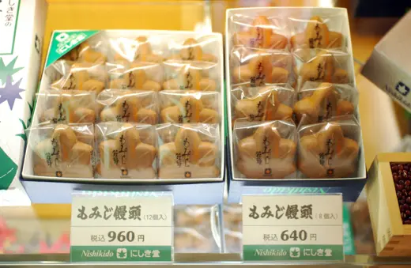
にしき堂
掲載元を見る ↗広島県 · 廿日市市
和菓子紅葉堂
掲載元を見る ↗広島県 · 廿日市市
和菓子やまだ屋
掲載元を見る ↗広島県 · 東広島市
和菓子マルイチ商店
掲載元を見る ↗広島県 · 広島市
和菓子亀屋
掲載元を見る ↗広島県 · 尾道市
和菓子はっさく屋
掲載元を見る ↗広島県 · 三次市
洋菓子くにひろ屋
掲載元を見る ↗広島県 · 尾道市
洋菓子おやつとやまねこ
掲載元を見る ↗山口県 · 山口市
和菓子御堀堂
掲載元を見る ↗山口県 · 柳井市
和菓子あさひ製菓
掲載元を見る ↗山口県 · 山口市
和菓子豆子郎
掲載元を見る ↗山口県 · 山口市
和菓子山陰堂
掲載元を見る ↗山口県 · 宇部市
和菓子吹上堂
掲載元を見る ↗山口県 · 萩市
和菓子光國本店
掲載元を見る ↗山口県 · 下関市
和菓子松琴堂
掲載元を見る ↗山口県 · 下関市
和菓子巌流本舗
掲載元を見る ↗徳島県 · 徳島市
和菓子小男鹿本舗 冨士屋
掲載元を見る ↗徳島県 · 美馬市
和菓子日乃出本店
掲載元を見る ↗徳島県 · 徳島市
和菓子和田の屋
掲載元を見る ↗徳島県 · 徳島市
和菓子日の出楼
掲載元を見る ↗徳島県 · 徳島市
和菓子福屋
掲載元を見る ↗徳島県 · 徳島市
和菓子イルローザ
掲載元を見る ↗徳島県 · 徳島市
和菓子ハレルヤ
掲載元を見る ↗徳島県 · 徳島市
和菓子菓游 茜庵
掲載元を見る ↗徳島県 · 徳島市
洋菓子あとりえ市
掲載元を見る ↗香川県 · 坂出市
和菓子名物かまど
掲載元を見る ↗香川県 · 琴平町
和菓子こんぴら堂
掲載元を見る ↗香川県 · 高松市
和菓子宗家くつわ堂
掲載元を見る ↗香川県 · 三豊市
和菓子鳥坂まんじゅう
掲載元を見る ↗香川県 · 三豊市
和菓子山下おいり本舗
掲載元を見る ↗香川県 · 観音寺市
和菓子白栄堂
掲載元を見る ↗香川県 · 高松市
和菓子夢菓房たから
掲載元を見る ↗香川県 · 高松市
和菓子三友堂
掲載元を見る ↗香川県 · 東かがわ市
和菓子ばいこう堂
掲載元を見る ↗愛媛県 · 松山市
和菓子一六本舗
掲載元を見る ↗愛媛県 · 松山市
和菓子うつぼ屋
掲載元を見る ↗愛媛県 · 東温市
和菓子母恵夢スイーツパーク
掲載元を見る ↗愛媛県 · 松山市
和菓子山田屋まんじゅう
掲載元を見る ↗愛媛県 · 大洲市
和菓子冨永松栄堂
掲載元を見る ↗愛媛県 · 新居浜市
和菓子畑田本舗
掲載元を見る ↗愛媛県 · 松山市
和菓子霧の森菓子工房 松山店
掲載元を見る ↗愛媛県 · 今治市
和菓子清光堂
掲載元を見る ↗愛媛県 · 松山市
和菓子薄墨羊羹
掲載元を見る ↗愛媛県 · 松山市
和菓子労研饅頭たけうち
掲載元を見る ↗高知県 · 高知市
和菓子浜幸
掲載元を見る ↗高知県 · 高知市
和菓子青柳
掲載元を見る ↗高知県 · 四万十町
和菓子水車亭
掲載元を見る ↗高知県 · 日高村
和菓子芋屋金次郎
掲載元を見る ↗高知県 · 高知市
和菓子野村煎豆加工店
掲載元を見る ↗高知県 · 高知市
和菓子西川屋老舗
掲載元を見る ↗高知県 · 高知市
和菓子都まん本舗
掲載元を見る ↗高知県 · 宿毛市
和菓子菱田ベーカリー
掲載元を見る ↗高知県 · 馬路村
洋菓子馬路村農協
掲載元を見る ↗福岡県 · 福岡市
和菓子石村萬盛堂
掲載元を見る ↗福岡県 · 福岡市
和菓子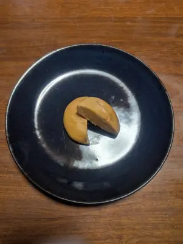
明月堂
掲載元を見る ↗福岡県 · 福岡市
和菓子山口油屋福太郎
掲載元を見る ↗福岡県 · 福岡市
和菓子如水庵
掲載元を見る ↗福岡県 · 太宰府市
和菓子かさの家
掲載元を見る ↗福岡県 · 福岡市
和菓子二鶴堂
掲載元を見る ↗福岡県 · 福岡市
和菓子千鳥饅頭総本舗
掲載元を見る ↗福岡県 · 飯塚市
和菓子ひよ子本舗吉野堂
掲載元を見る ↗福岡県 · 北九州市
和菓子湖月堂
掲載元を見る ↗佐賀県 · 小城市
和菓子村岡総本舗
掲載元を見る ↗佐賀県 · 唐津市
和菓子大原老舗
掲載元を見る ↗佐賀県 · 唐津市
和菓子元祖 伊藤けえらん
掲載元を見る ↗佐賀県 · 佐賀市
和菓子白玉饅頭元祖吉野屋
掲載元を見る ↗佐賀県 · 佐賀市
和菓子丸芳露本舗 北島
掲載元を見る ↗佐賀県 · 伊万里市
和菓子エトワール・ホリエ
掲載元を見る ↗佐賀県 · 佐賀市
和菓子村岡屋
掲載元を見る ↗佐賀県 · 佐賀市
和菓子鶴屋
掲載元を見る ↗長崎県 · 長崎市
洋菓子福砂屋
掲載元を見る ↗長崎県 · 佐世保市
和菓子九十九島グループ
掲載元を見る ↗長崎県 · 長崎市
和菓子唐草
掲載元を見る ↗長崎県 · 長崎市
和菓子茂木一まる香本家
掲載元を見る ↗長崎県 · 雲仙市
和菓子小浜食糧
掲載元を見る ↗長崎県 · 長崎市
和菓子福建
掲載元を見る ↗長崎県 · 平戸市
和菓子湖月堂老舗
掲載元を見る ↗長崎県 · 諫早市
和菓子菓秀苑 森長
掲載元を見る ↗熊本県 · 熊本市
和菓子お菓子の香梅
掲載元を見る ↗熊本県 · 熊本市
和菓子長寿庵
掲載元を見る ↗熊本県 · 熊本市
洋菓子熊本菓房
掲載元を見る ↗熊本県 · 熊本市
和菓子風雅
掲載元を見る ↗熊本県 · 熊本市
和菓子福田屋
掲載元を見る ↗熊本県 · 八代市
和菓子彦一本舗
掲載元を見る ↗熊本県 · 山鹿市
和菓子早瀬錦堂
掲載元を見る ↗熊本県 · 熊本市
和菓子蜂楽饅頭
掲載元を見る ↗大分県 · 由布市
和菓子花麹菊家
掲載元を見る ↗大分県 · 大分市
和菓子ざびえる本舗
掲載元を見る ↗大分県 · 竹田市
和菓子但馬屋老舗
掲載元を見る ↗大分県 · 大分市
和菓子田口菓子舗
掲載元を見る ↗大分県 · 臼杵市
和菓子後藤製菓
掲載元を見る ↗大分県 · 別府市
洋菓子岡本屋売店
掲載元を見る ↗大分県 · 由布市
洋菓子B-speak
掲載元を見る ↗大分県 · 別府市
和菓子宝物産
掲載元を見る ↗宮崎県 · 宮崎市
和菓子お菓子の日高
掲載元を見る ↗宮崎県 · 宮崎市
洋菓子菓子処わらべ
掲載元を見る ↗宮崎県 · 小林市
洋菓子風月堂
掲載元を見る ↗宮崎県 · 宮崎市
和菓子金城堂
掲載元を見る ↗宮崎県 · 宮崎市
和菓子安田屋
掲載元を見る ↗宮崎県 · 宮崎市
和菓子三松
掲載元を見る ↗宮崎県 · 宮崎市
和菓子味のくらや
掲載元を見る ↗宮崎県 · 日南市
和菓子飫肥せんべい
掲載元を見る ↗宮崎県 · 宮崎市
洋菓子九州パンケーキカフェ
掲載元を見る ↗鹿児島県 · 鹿児島市
和菓子明石屋
掲載元を見る ↗鹿児島県 · 鹿児島市
和菓子薩摩蒸氣屋
掲載元を見る ↗鹿児島県 · 鹿屋市
洋菓子フェスティバロ
掲載元を見る ↗鹿児島県 · 鹿児島市
和菓子平田屋
掲載元を見る ↗鹿児島県 · 霧島市
和菓子徳重製菓とらや
掲載元を見る ↗鹿児島県 · 鹿児島市
和菓子天文館むじゃき
掲載元を見る ↗鹿児島県 · 日置市
和菓子梅月堂
掲載元を見る ↗鹿児島県 · 霧島市
和菓子九面屋
掲載元を見る ↗鹿児島県 · 鹿児島市
和菓子セイカ食品
掲載元を見る ↗沖縄県 · 読谷村
洋菓子御菓子御殿 読谷本店
掲載元を見る ↗沖縄県 · 那覇市
和菓子新垣ちんすこう本舗
掲載元を見る ↗沖縄県 · 糸満市
和菓子南風堂
掲載元を見る ↗沖縄県 · 浦添市
洋菓子ほうき星
掲載元を見る ↗沖縄県 · 那覇市
和菓子歩
掲載元を見る ↗沖縄県 · 那覇市
和菓子ぎぼまんじゅう
掲載元を見る ↗沖縄県 · 那覇市
和菓子マルキヨ製菓
掲載元を見る ↗沖縄県 · 沖縄市
和菓子具志堅商店
掲載元を見る ↗沖縄県 · 浦添市
洋菓子ブルーシール
掲載元を見る ↗


.jpg){kind=link}


.jpg){kind=link}


.jpg){kind=link}


.jpg){kind=link}
.jpg){kind=link}